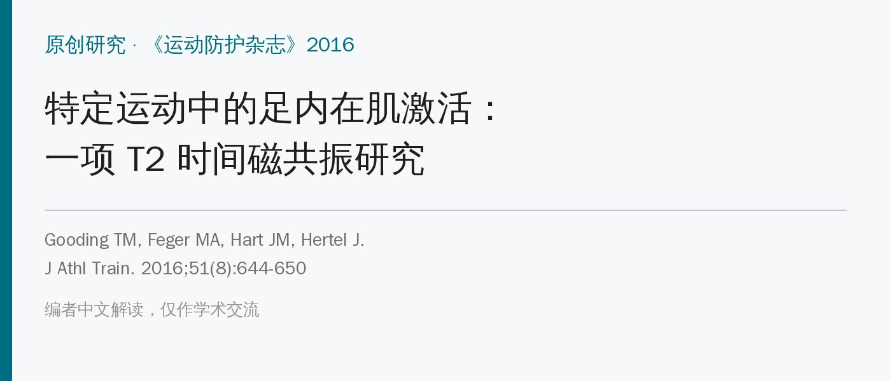
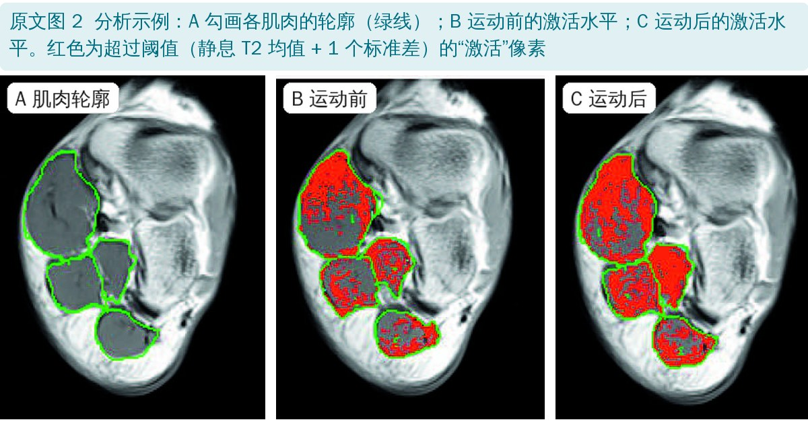
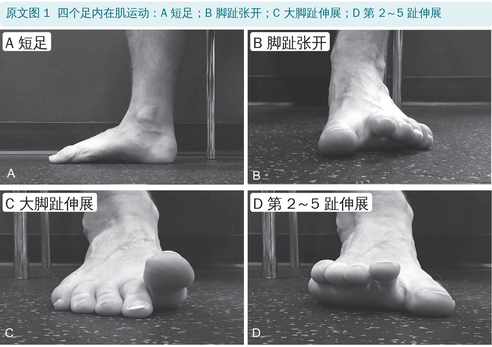
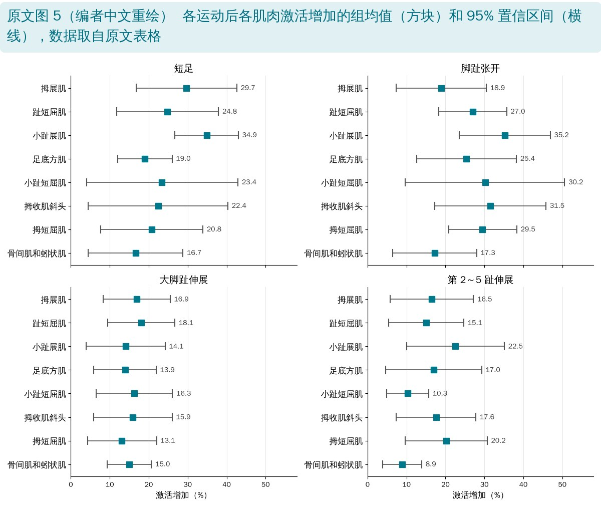
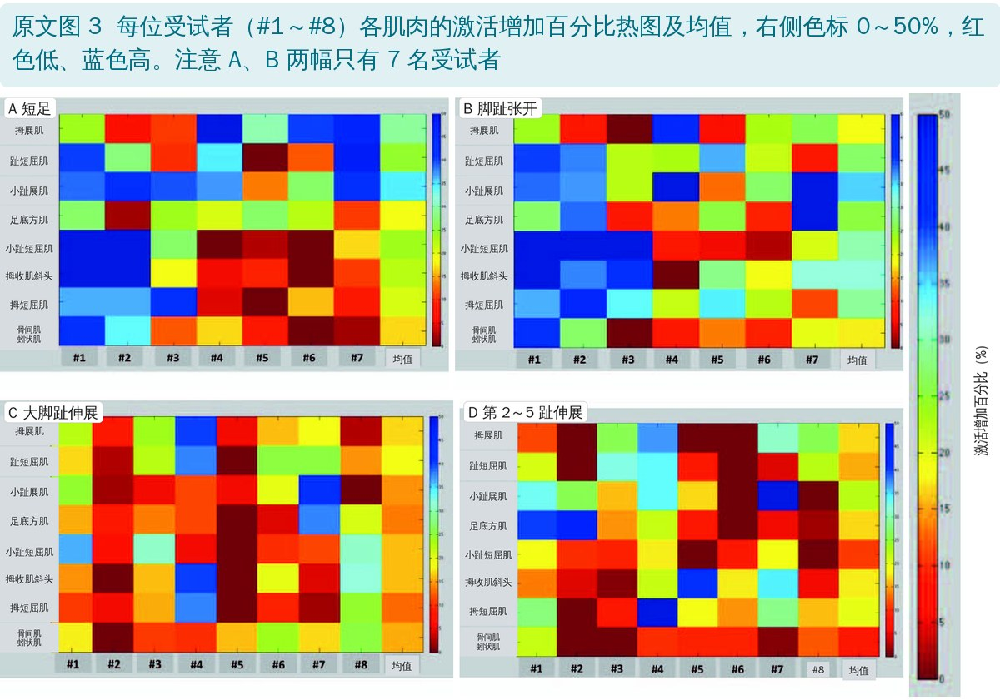
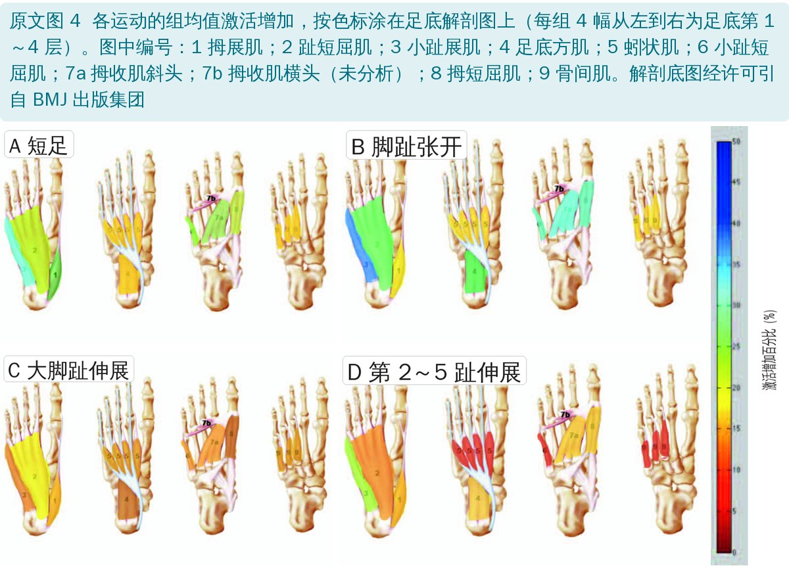

🔖原文信息（编者中文重排）
📚 文献信息
▪ Gooding TM, Feger MA, Hart JM, Hertel J. Intrinsic Foot Muscle Activation During Specific Exercises: A T2 Time Magnetic Resonance Imaging Study. J Athl Train. 2016;51(8):644-650. doi:10.4085/1062-6050-51.10.07
▪ 作者单位：美国弗吉尼亚大学（Jay Hertel 也是“足核心系统”概念的作者之一）
▪ 研究类型：描述性实验室研究，8 名大学田径 / 越野运动员
足内在肌维持内侧纵弓、控制足弓形变的幅度和速度，并参与站立和步行中的姿势控制；足底筋膜病、拇外翻、扁平足都与内在肌无力或萎缩有关。临床上开了很多内在肌练习，但每个练习到底练到了哪几块肌肉，证据很少。
难点在于测量：足内在肌小而深、挨得很近，表面肌电串扰严重；细针肌电又很难确认针扎进了哪块肌肉，还得超声引导，一次也测不了几块。T2 磁共振能通过运动后肌肉 T2 信号的变化（与血流、代谢和组织水分改变相关）无创地反映每一块肌肉的激活，这是第一次用它来看足内在肌。
• 对象：8 名美国大学一级联赛越野和田径运动员（5 男 3 女，20 岁），都练过这些动作、能双脚正确完成；排除影响肌肉大小或功能的疾病和当时有伤的人
• 流程：先坐着、脚不负重 10 分钟 → 仰卧在 3T 磁共振里扫基线（踝背伸 0° 固定在脚踏板上）→ 回到坐位，左右脚各做一个动作，交替进行，节拍器 20 次 / 分钟、每次收缩 3 秒，各做 40 次 → 立即回扫
• 两天各做 2 个动作，间隔 48 小时；动作和左右脚的分配用拉丁方随机
• 分析：每块肌肉取横截面积最大的连续 3 层；以静息 T2 均值 + 1 个标准差为阈值，超过阈值的像素算“激活”；运动后激活比例减去运动前激活比例 = 激活增加百分比
• 分析的肌肉：拇展肌、趾短屈肌、小趾展肌、足底方肌、小趾短屈肌、拇收肌斜头、拇短屈肌、骨间肌和蚓状肌（两者没有清楚的筋膜分界，合并分析）；拇收肌横头分不清，未分析
• 评判标准：95% 置信区间下限不跨过 0，就算这块肌肉被激活

🔖原文图 2：磁共振分析示例

🔖原文图 1：四个足内在肌运动
• 短足：把跖骨头拉向跟骨，让内侧纵弓变短、抬高，不屈脚趾、不用外在肌代偿
• 脚趾张开：先伸直 5 个脚趾，再同时外展所有脚趾，并把大脚趾和小趾屈回地面，第 2～4 趾保持伸直；然后放松中间三趾
• 大脚趾伸展：抬起大脚趾，第 2～5 趾平放在地上不动
• 第 2～5 趾伸展：抬起第 2～5 趾，大脚趾平放在地上不动
• 全部坐位、不加阻力，跟节拍器做，每次收缩 3 秒，做 40 次（预实验确定这个量能让所有人产生中等程度的激活）

🔖原文图 5：各运动后各肌肉激活增加（编者中文重绘）
• 四个动作都激活了全部被测的足底内在肌，增加幅度 8.9%～35.2%，95% 置信区间都不跨过 0
• 短足：小趾展肌（34.9%）、拇展肌（29.7%）、趾短屈肌（24.8%）最高——这些肌肉与纵弓平行
• 脚趾张开：小趾展肌（35.2%）、拇收肌斜头（31.5%）、小趾短屈肌（30.2%）最高——止于第 1、5 趾的肌肉
• 大脚趾伸展：范围较窄（13.1%～18.1%），趾短屈肌、拇展肌、小趾短屈肌稍高——可能在把其余脚趾压在地上、稳定第 1 跖骨头
• 第 2～5 趾伸展：小趾展肌（22.5%）、拇短屈肌（20.2%）、拇收肌斜头（17.6%）较高——可能在把大脚趾稳在地上
• 受试者之间差异很大，看不出谁哪块肌肉总是最高或最低；运动前激活水平与增加幅度只有弱相关（r = −0.19）
| 肌肉 | 短足 | 脚趾张开 | 大脚趾伸展 | 第 2～5 趾伸展 |
|---|---|---|---|---|
| 拇展肌 | 29.7（16.8, 42.6） | 18.9（7.4, 30.5） | 16.9（8.3, 25.5） | 16.5（5.8, 27.2） |
| 趾短屈肌 | 24.8（11.8, 37.9） | 27.0（18.3, 35.7） | 18.1（9.5, 26.7） | 15.1（5.4, 24.7） |
| 小趾展肌 | 34.9（26.7, 43.0） | 35.2（23.6, 46.9） | 14.1（3.9, 24.2） | 22.5（10.0, 35.1） |
| 足底方肌 | 19.0（12.0, 26.0） | 25.4（12.6, 38.2） | 13.9（5.8, 21.9） | 17.0（4.7, 29.3） |
| 小趾短屈肌 | 23.4（4.0, 42.9） | 30.2（9.7, 50.6） | 16.3（6.5, 26.1） | 10.3（4.9, 15.7） |
| 拇收肌斜头 | 22.4（4.5, 40.3） | 31.5（17.2, 45.8） | 15.9（5.9, 26.0） | 17.6（7.4, 27.8） |
| 拇短屈肌 | 20.8（7.6, 33.9） | 29.5（20.8, 38.3） | 13.1（4.3, 22.0） | 20.2（9.6, 30.7） |
| 骨间肌和蚓状肌 | 16.7（4.5, 28.8） | 17.3（6.5, 28.0） | 15.0（9.3, 20.7） | 8.9（3.9, 13.9） |
原文表格：4 个足内在肌运动后各肌肉激活的增加，均值 %（95% 置信区间）（中文翻译）

🔖原文图 3：每位受试者的激活热图（英文缩写已改为中文）

🔖原文图 4：组均值激活的解剖热图
• 只有 8 人，而且是会做这些动作的健康运动员：结果不能直接推到扁平足、足底筋膜炎患者或不会做动作的人
• 没有比较动作之间的差异：只看每个动作是否“显著高于 0”，所以不能说哪个动作更好；置信区间普遍很宽、大量重叠
• T2 磁共振是运动“之后”的间接指标：反映的是 40 次低强度收缩后的代谢和水分变化，不能区分向心、离心或等长作用，也不等于肌肉力量
• 坐位、无阻力：临床上常从坐位进阶到双脚站、单脚站，站立位的激活可能完全不同
• “激活”阈值取静息均值 + 1 个标准差：这个阈值本身就决定了基线上有相当一部分像素被算作“激活”，结果对阈值设定很敏感
• 优点：第一次能一次看到 8 组足底内在肌，弥补了表面肌电串扰和细针肌电只能测少数几块的不足
• 短足的最低值认错了肌肉：结果说短足的增加“从足底方肌的 16.7%”开始，但表中 16.7% 是骨间肌和蚓状肌，足底方肌是 19.0%
• 热图少了 1 个人：样本是 8 人，但图 3 的短足（A）和脚趾张开（B）热图只有 #1～#7 共 7 列，另外两个动作有 8 列；原文没有解释
• 图号对不上：结果说“热图见图 4”“解剖图见图 5”，实际上每人热图是图 3、解剖热图是图 4、图 5 是均值和置信区间
• “±”含义不清：结果写“34.9% ± 8.1%”，这个 ± 其实是 95% 置信区间的半宽，不是标准差，原文没说明
• 阈值描述混乱：先说“上限设为 900～10 000”，后面又说激活范围是“到上限 900”；这些数值是什么单位也没说
• 因变量前后说法不一：方法说因变量是“T2 时间”，实际报告的是超过阈值的像素比例变化
• 结论自相矛盾：讨论先说能“确定地识别哪些肌肉在用”，紧接着又说看不出规律、无法针对具体肌肉推荐动作
• 小错：“flexor digitorum（24.8%）”漏了 brevis；“abductor digitorum minimi”应为 abductor digiti minimi；表格中“(3.9. 13.9)”标点有误
• 四个动作都能练到全部足底内在肌：短足、脚趾张开、大脚趾伸展、第 2～5 趾伸展都可以用，40 次就能产生明显激活
• 短足偏纵弓方向的肌肉（小趾展肌、拇展肌、趾短屈肌），适合扁平足、足弓支撑不足
• 脚趾张开偏第 1、5 趾的肌肉（小趾展肌、拇收肌斜头、小趾短屈肌、拇短屈肌）
• 趾伸展练习强度较低，可作为入门或补充；要点是“抬起的脚趾抬，压着的脚趾压住”
• 内在肌倾向于“一起工作”：别指望某个动作只练一块肌肉，更重要的是动作做对、量够
• 进阶：从坐位 → 双脚站 → 单脚站，再到功能动作
欢迎关注骨科康复小黄公众号，获取更多物理治疗的专业知识！
📄参考文献：
Gooding TM, Feger MA, Hart JM, Hertel J. Intrinsic Foot Muscle Activation During Specific Exercises: A T2 Time Magnetic Resonance Imaging Study. J Athl Train. 2016;51(8):644-650. doi:10.4085/1062-6050-51.10.07
原文版权归美国运动防护师协会（NATA）所有，未标注开放许可协议；原文图 4 的解剖底图经许可引自 BMJ 出版集团。本文为学术交流用的中文解读：图 1、2、4 引自原文并加中文标签和图注，图 3 英文缩写改为中文，图 5 按原文数据中文重绘，表格为中文翻译。如有侵权请联系删除。